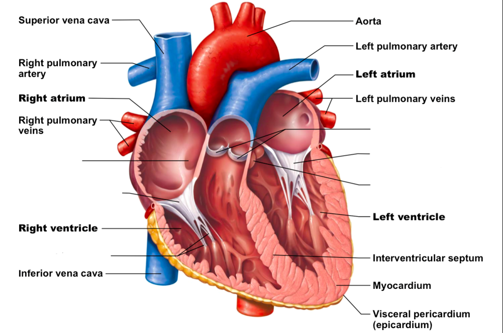
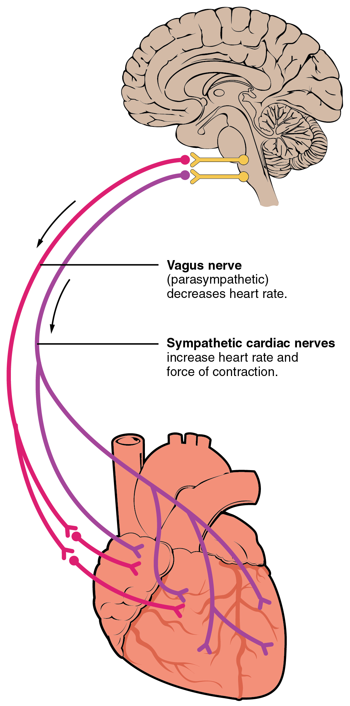

Heart

Heart ( in English : Heart View ) , muscular organ in humans and animals other, pumping blood through the blood vessels
in the circulatory system . The blood supplies the body with oxygen and nutrients , and helps remove the waste products
of metabolism . The heart in humans is located between the lungs , in the middle chamber of the chest .
Heart is divided in humans , mammals and other birds into four compartments: two Aleutan Alovenan right and left , and
Sfletan two ventricles right and left . The right atrium and ventricle are usually referred to as the right heart , and
the left atrium and ventricle are referred to as the left heart . As for the hearts of fish , on the contrary, they
contain only two chambers, the atria and the ventricle, while the hearts of reptiles have three chambers. In a healthy
heart, blood flows in one direction through the heart thanks to the presence of heart valves, which prevents its flow in
the opposite direction. heart is surrounded by a hollow sac for protection. The cavity of this sac contains a small
amount of fluid. The walls of the heart consist of three layers: the epicardium , the myocardium, and the endocardium .
The heart pumps blood in a rhythm determined by a group of pacemaker cells in the SA node . These cells produce a
current that causes the heart to contract, and this contraction is transmitted to the atrioventricular node , and then
it travels through the conductive system of the heart. The heart receives low-oxygen blood from the systemic
circulation. This blood enters the heart to the right atrium specifically through the superior and inferior vena cava ,
and then this blood passes through the tricuspid valve to the right ventricle. The blood is pumped from the right
ventricle through the pulmonary circulation to the lungs , where it receives oxygen and excretes carbon dioxide . Later,
the oxygenated blood returns to the left atrium, and then the blood passes to the left ventricle, where it is pumped
from there throughThe aorta leads to the systemic circulation, where oxygen is used by various tissues and carries the
blood with carbon dioxide. resting heart beats at a rate close to 72 beats per minute. While exercise increases heart
rate temporarily, it lowers resting heart rate in the long term, which is good for heart health.
Cardiovascular disease (CVD) was the most common cause of death worldwide in 2008, accounting for about 30% of deaths.
More than three quarters of these cases were due to coronary artery disease and heart attack . Risk factors include:
smoking , being overweight , high cholesterol , lack of exercise , high blood pressure , uncontrolled diabetes , and
other factors. CVDs usually have no symptoms or may cause chest pain or shortness of breath. Heart disease is diagnosed
by taking a medical history and listening for heart sounds usingStethoscope , electrocardiogram , and ultrasound .
. Infrastructure
heart wall
The wall of the heart consists of three layers: the inner, which is the endocardium, the middle, which is the
myocardium, and the outer, which is the epicardium. These three layers are surrounded by a bi-membrane sac, the
pericardium.
The inner layer of the heart wall is called the endocardium and it is lined by simple flat epithelium. It covers the
inside of the heart's chambers and covers its valves. The endocardium continues with the lining of the veins and
arteries of the heart, and is connected to the heart muscle underneath by a thin layer of connective tissue . The
endocardial layer lining the heart may play a role in regulating myocardial contraction through its secretion of
endothelin .
The middle layer of the heart wall is the muscular layer that represents the cardiomyocyte - involuntary striated muscle
tissue surrounded by a framework of collagen . The muscle fibers are distributed in the heart in a complex and elegant
pattern, where the muscle cells take the shape of a spiral or swirl around the heart chambers, where the outer layers
take the shape of the number (8) around the atria and the base of the great vessels, while the internal fibers take the
shape of the number (8) around the ventricles and heads towards the top the heart. This complex model allows the heart
to pump blood more efficiently.
There are two types of cells in cardiac muscle: muscle cells that are able to contract easily, and pacemaker cells that
belong to the conducting system of the heart. Muscle cells make up about 99% of the mass of the atria and ventricles.
These contractile cells are connected to each other by intercalated discs that allow the muscle cells to respond quickly
to the action potential impulses of the pacemaker cells. These discs allow the muscle cells to contract together as if
they were a cell mass, thus allowing the heart to contract so that it can eject blood into the main arteries . Pacemaker
cells make up about 1% of the heart's mass and make up the heart's conducting system. Pacemaker cells are much smaller
than contractile cells and have fewer myofibrils than contractile cells, which gives them a limited ability to contract.
The function of pacemaker cells is similar in many respects to the function of neurons . Cardiac tissue has the property
of autorhythmia—the ability to initiate a cardiac action potential at a constant rate—and rapidly propagate the impulse
from cell to cell to trigger the contraction of the entire heart.
The pericardium surrounds the heart, and is composed of two membranes: an inner serous called the epicardium , and an
outer fibrous membrane . Between the two membranes is the pericardial cavity, which contains the pericardial fluid,
which acts as a lubricant on the surface of the heart.
Coronary rotation
Heart tissue, like all body tissues, needs a supply of oxygen, nutrients, and a way to get rid of metabolic waste, and
this is achieved through the coronary circulation , which includes arteries, veins and lymphatic vessels. Blood flows
through the coronary vessels with a frequency related to the relaxation and contraction of the heart muscle.
The heart tissue receives blood from two arteries that emerge from the aorta just above the valve: the left coronary
artery, which is the main artery, and the right coronary artery . The left coronary artery, shortly after its origin,
divides into two arteries, the left anterior descending artery and the left curved artery. The left anterior descending
artery supplies the left ventricle (heart tissue, outer side, and septum) by branching into smaller arteries. The left
flexor artery supplies the posterior and inferior surfaces of the left ventricle. The right coronary artery supplies the
right atrium, the right ventricle, and the lower posterior portions of the left ventricle. The sinoatrial node perfusion
comes from the right coronary artery (in about 60% of cases), while the AV node perfusion comes from the right coronary
artery (in about 60% of cases).It is also from the right coronary artery (in about 90% of cases). The right coronary
artery runs in a groove on the back of the heart, and the left anterior descending artery runs in a groove in the
anterior aspect of the heart. There are great variations in the anatomy of the arteries that supply the heart.
The coronary sinus is the large vein that drains into the right atrium, and receives blood from most cardiac venous
drainage, as it receives blood from the large cardiac vein (which in turn receives blood from the left atrium and both
ventricles) and the posterior cardiac vein (the blood drains from the back of the left ventricle) ), the middle cardiac
vein (the blood drains from the bottom of the right and left ventricles) and the small cardiac veins. The anterior
cardiac veins drain blood from the front of the right ventricle and drain directly into the right atrium.
There are small lymphatic networks located under the three layers of the wall of the heart called plexuses. These
networks meet in two main trunks, right and left, which pass from the groove between the ventricles on the surface of
the heart, and receive smaller vessels as they pass into the sulcus. These vessels then pass into the atrioventricular
groove and receive a third vessel that drains the part of the left ventricle that is located on the diaphragm . The
third vessel joins the left vessel and travels along the pulmonary artery and left atrium to the inferior
tracheotracheal ganglion. While the right vessel runs along the right atrium and the part of the right ventricle lying
on the diaphragm , and then usually runs in front of the ascending aorta and ends in the brachiocephalic node.
Insufficiency

The heart receives nerve signals from the vagus nerve and from the nerves emanating from the sympathetic trunk. These
actions influence, not control, heart rate . Sympathetic nerves also contribute to affecting the force of heart
contraction. The signals delivered by these nerves originate from two cardiac centers in the medulla oblongata or
medulla oblongata. The vagus nerve transmits signals from the parasympathetic nervous system and decreases the heart
rate, while the nerves of the sympathetic trunk increase this rate. These nerves form a network of nerves located above
the heart called the cardiac plexus.
The vagus nerve is a long nerve that emerges from the brainstem and provides parasympathetic innervation to a large
number of organs in the chest and abdomen, including the heart. While the sympathetic nerves of the heart emanate from
the sympathetic trunk of the first to fourth thoracic ganglia and then migrate to the sinoatrial and atrioventricular
nodes as they innervate the atria and ventricles. The ventricles are more sympathetically innervated than
parasympathetic. Sympathetic stimulation leads to the release of the neurotransmitter norepinephrine (also called
noradrenaline) at the neuromuscular junction of the cardiac nerves, which leads to a shortening of the repolarization
period, thus accelerating the rate of depolarization and contraction, and this overall leads to an increase in the heart
rate. This stimulation opens chemical channels or gatewaysfor calcium and sodium ions , allowing the influx of
positively charged ions. Norepinephrine binds to beta-1 receptors.
Physiology
blood flow

The function of the heart is to be a blood pump for the circulatory system, providing a continuous blood flow to the
entire body. This circulation consists of systemic circulation to and from the particle and pulmonary circulation to and
from the lungs. The blood undergoes a gaseous exchange in the pulmonary circulation where it gives up carbon dioxide and
accepts oxygen instead in a process known as respiration . The blood is then transferred to the heart and from there to
the body through the systemic circulation, where oxygen is given to the body tissues and the blood is loaded with carbon
dioxide, and this deoxygenated blood is returned to the heart again in order to pump it to the lungs to repeat the same
process.
The right heart collects deoxygenated blood from two major veins, the superior vena cava and inferior vena cava , from
which blood is continuously collected in the atria. superior vena cava drains blood from everything that is above the
diaphragm and drains into the posterior upper part of the right atrium, while the inferior vena cava drains from
everything that is below the diaphragm and drains into the posterior part of the right atrium under the mouth of the
superior vena cava. The mouth of the coronary sinus is located just above and medial to the mouth of the inferior vena
cava. In addition, the coronary sinus drains deoxygenated blood from the myocardium to the right atrium. As mentioned
earlier, blood is collected in the right atrium, and when the right atrium contracts, the blood is pumped through the
tricuspid valve.into the right ventricle. When the right ventricle contracts, the tricuspid valve closes and blood is
pumped into the pulmonary trunk through the pulmonary valve. The pulmonary trunk is divided into two pulmonary arteries,
and these arteries, in turn, are divided into smaller arteries continuously in the lungs, until the branching reaches
the capillaries. These capillaries pass near the alveoli where gaseous exchange occurs.
In the left heart, blood returns to the left atrium through the pulmonary veins , then is pumped to the left ventricle
through the mitral valve, and then through the aortic valve to the systemic circulation. The aorta is a large artery
that branches into smaller arterioles , then arterioles , and finally capillaries . In the capillaries, the body's cells
take in oxygen and nutrients from the blood for metabolism, and excrete carbon dioxide and metabolic waste products. The
capillary blood thus becomes deoxygenated and travels through the venules and venules that drain into the superior and
inferior vena cava on the right side of the heart.
Cardiac cycle

The term cardiac cycle refers to a complete heartbeat that includes systole, diastole, and cessation. The cycle begins
with the atria contracting and ends with the ventricles relaxing. Systole refers to the contraction of the ventricles.
The term diastole refers to the relaxation of the ventricles and their filling with blood. The atria and ventricles work
in clear harmony, as when they contract, as the ventricles contract, the atria relax and fill with blood. In diastole,
when the ventricles relax, the atria contract to pump blood into the ventricles. This consistency ensures that the blood
is effectively pumped throughout the body.
At the beginning of the heart cycle, in the first diastole, the atria and ventricles are relaxed, and when blood moves
from areas of high pressure to areas of low pressure, where all the chambers of the heart are relaxed, blood will flow
towards the atria (through the coronary sinus and pulmonary veins). When the atria begin to fill, the pressure inside
them will rise and blood will begin to move from the atria toward the ventricles. In the late diastolic phase, the atria
contract to pump more blood into the ventricles. This causes the pressure within the ventricles to rise to a certain
point at which the systole phase begins and the ventricles contract and pump blood toward the pulmonary trunk (right
ventricle) and the aorta (left ventricle).
When the atrioventricular (mitral and tricuspid) valves are open during blood flow to the ventricles, the pulmonary and
aortic valves are closed to prevent blood from returning from the ventricles back into the atria. When the ventricular
pressure becomes greater than the atrial pressure, the mitral and tricuspid valves will close. When the ventricles
contract, the high pressure forces the pulmonary and aortic valves to open, and when the ventricles relax, the valves
will close in response to the pressure drop.
cardiac output

Cardiac output (CO) is a measurement of the amount of blood each ventricle pumps (stroke volume) in one minute. Heart
output is calculated by multiplying the stroke volume (SV) by the number of beats per minute, ie the heart rate (HR).
Then CO = SV x HR. The cardiac output is specifically related to body volume by body surface area, and this is called
the cardiac index.
The average normal heart output is about 5.25 liters per minute, with an average heart stroke volume of 70 milliliters
per minute, the normal range is 4 to 8 liters per minute . The stroke volume is usually measured using echocardiography
and can be influenced by many factors such as heart size, physical and mental condition of the individual, gender,
contraction, duration of contraction, and pre- and post-load.
Preload refers to the filling pressure of the atria at the end of the diastolic phase, when they are fully filled.
Another key factor is how long the ventricles fill - when the ventricles contract faster, there is less time to fill and
the preload will be lower. Preload can be affected by a person's blood volume. The force of each contraction in the
heart is proportional to the preload, explained by the Frank-Starling mechanism, which indicates that the force of
contraction is directly proportional to the initial length of the muscle fibres, which means that the ventricles will
contract more forcefully as they expand more during filling.
Postload, or the amount of pressure the heart must generate to expel blood at systole, is influenced by vascular
resistance. It can be affected by narrowing of the heart valves or the constriction or relaxation of peripheral blood
vessels.
The force of heart muscle contractions controls the size of the stroke, and it can be positively or negatively affected
by factors called inotropes . These agents can be the result of changes within the body or given as medications as part
of treatment for a medical disorder or as a form of life support specifically in intensive care units. The inotropes
that increase the force of contraction are called "positive" inotropes and include sympathetic agents such as
adrenaline, noradrenaline , and dopamine . Those that reduce the force of heart contraction are called "negative"
inotropes and include calcium channel blockers.